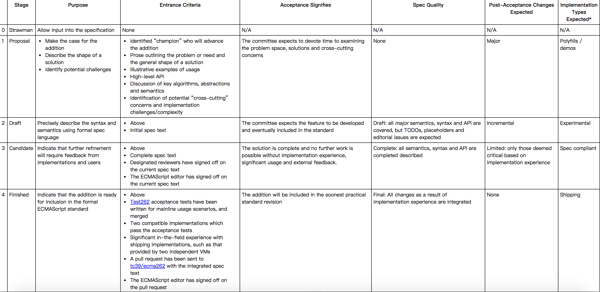

每个提案要经过的五个阶段的官方说明 
Object.values
const obj = { x: 'xxx', y: 1 };
Object.values(obj); // ['xxx', 1]
const obj = ['e', 's', '8']; // same as { 0: 'e', 1: 's', 2: '8' };
Object.values(obj); // ['e', 's', '8']
Object.entries
const obj = { x: 'xxx', y: 1 };
Object.entries(obj); // [['x', 'xxx'], ['y', 1]]
const obj = ['e', 's', '8'];
Object.entries(obj); // [['0', 'e'], ['1', 's'], ['2', '
'es8'.padStart(2); // 'es8'
'es8'.padStart(5); // ' es8'
'es8'.padStart(6, 'woof'); // 'wooes8'
'es8'.padStart(14, 'wow'); // 'wowwowwowwoes8'
'es8'.padEnd(2); // 'es8'
'es8'.padEnd(5); // 'es8 '
'es8'.padEnd(6, 'woof'); // 'es8woo'
'es8'.padEnd(14, 'wow'); // 'es8wowwowwowwo'
const obj = {
get es7() { return 777; },
get es8() { return 888; }
};
Object.getOwnPropertyDescriptors(obj);
// {
// es7: {
// configurable: true,
// enumerable: true,
// get: function es7(){}, //the getter function
// set: undefined
// },
// es8: {
// configurable: true,
// enumerable: true,
// get: function es8(){}, //the getter function
// set: undefined
// }
// }
function es8(var1, var2, var3,) {
// ...
}
es8(10, 20, 30,);
function fetchTextByPromise() {
return new Promise(resolve => {
setTimeout(() => {
resolve("es8");
}, 2000);
});
}
async function sayHello() {
const externalFetchedText = await fetchTextByPromise();
console.log(`Hello, ${externalFetchedText}`); // Hello, es8
}
sayHello(); // Hello es8
// main.js
const worker = new Worker('worker.js');
// To be shared
const sharedBuffer = new SharedArrayBuffer( // (A)
10 * Int32Array.BYTES_PER_ELEMENT); // 10 elements
// Share sharedBuffer with the worker
worker.postMessage({sharedBuffer}); // clone
// Local only
const sharedArray = new Int32Array(sharedBuffer); // (B)
// worker.js
self.addEventListener('message', function (event) {
const {sharedBuffer} = event.data;
const sharedArray = new Int32Array(sharedBuffer); // (A)
// ···
});
function latex(strings) {...}
let document = latex`
\newcommand{\unicode}{\textbf{Unicode!}} // 报错
\newcommand{\xerxes}{\textbf{King!}} // 报错
`
function tag(strs) {
strs[0] === undefined
strs.raw[0] === "\\unicode and \\u{55}";
}
tag`\unicode and \u{55}`
Promise原生提供finally方法
Promise.resolve(2)
.then(() => {}, () => {})
.finally(function () {
})
目前的规范规定try{}catch(e){}的e参数不可省略。但是这个参数又经常不用。这个提案就提出让这个参数变成是可选的。
try{
}catch(){
// 可不写参数了
}
if (isLegacyPlatform()) {
import(`messages_${getLocale()}.js)
.then(myModule => {
console.log(myModule.default);
});
}
const obj = {foo: 1, bar: 2, baz: 3};
const {foo, ...rest} = obj;
const obj = {foo: 1, bar: 2, baz: 3};
console.log({...obj, qux: 4})
//{foo: 1, bar: 2, baz: 3, qux: 4 }
class定义新增公共字段和私有字段
class Counter extends HTMLElement {
#x = 0; //私有字段
y = 1;
a () {
}
}
新增异步迭代器，针对异步数据迭代
const { value, done } = syncIterator.next();
asyncIterator.next().then(({ value, done }) => /* ... */);
for await (const line of readLines(filePath)) {
console.log(line);
}
正则表达式以前只有先行断言，现在新增正向后行断言(?<=...)和负向后行断言(?<!...)
/(?<=\$)\d+(\.\d*)?/.test('$10.53') // true
/(?<=\$)\d+(\.\d*)?/.test('&10.53') // false
/(?<!\$)\d+(\.\d*)?/.test('$10.53') // false
/(?<!\$)\d+(\.\d*)?/.test('&10.53') // true
正则表达式新增一种方式
```
const regex = /^\p{Decimal_Number}+$/u;
regex.test('𝟏𝟐𝟑𝟜𝟝𝟞𝟩𝟪𝟫𝟬𝟭𝟮𝟯𝟺𝟻𝟼');
// → true
const regex = /\p{Emoji_Modifier_Base}$/u;
regex.test('⌚');
// → true
(?<name>...)let {groups: {one, two}} = /^(?<one>.*):(?<two>.*)$/u.exec('foo:bar');
console.log(`one: ${one}, two: ${two}`); // prints one: foo, two: bar
.不能匹配\n \r等换行符，新增sflag，支持单行模式，从而让.能匹配换行符/./s.test('\n') // true
typeof 123n === 'bigint'